{kind=link}
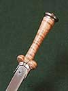
4
DG45
Nierendolch
Flämisch · 1450–1460
Gesamtlänge: ca. 38,5 cm. Das Original ist im Besitz der Wallace Collection, London.
285 €unverbindlich
Nierendolche, Scheibendolche und Ohrendolche, spanische Linkshanddolche und lange Messer, vom XIII. bis zum XVII. Jahrhundert.
Aufgrund sehr schwankender Inputkosten haben alle Preise nur informativen Wert und können geringfügigen Änderungen unterliegen. Bitte erfragen Sie bei jeder Bestellung die aktuelle Preislage — siehe Kontakt.

4Flämisch · 1450–1460
Gesamtlänge: ca. 38,5 cm. Das Original ist im Besitz der Wallace Collection, London.
285 €unverbindlich
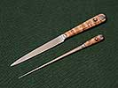
3Flämisch · 1450–1460
Gesamtlänge: ca. 22 cm & 19 cm. Ergänzung zum Dolch DG45. Der Originalsatz ist im Besitz der Wallace Collection, London.
235 €unverbindlich
 2
2
Wohl Deutschland · XV. Jahrhundert
Gesamtlänge: ca. 42 cm.
249 €unverbindlich
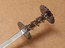
4Deutschland oder Frankreich · um 1450
Gesamtlänge: ca. 50,5 cm, Gewicht: 780 g. Das Original ist im Besitz des Reichstadtmuseums Rothenburg o.d.T., Deutschland.
265 €unverbindlich
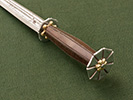
4Deutschland oder Italien · spätes XV. Jahrhundert
Gesamtlänge: ca. 37 cm. Das Original ist im Besitz des Reichstadtmuseums Rothenburg o.d.T., Deutschland.
299 €unverbindlich
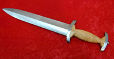
1Schweiz · XV.–XVI. Jahrhundert
Standardmodell.
249 €unverbindlich
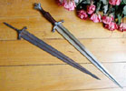
1Deutschland · um 1500
Länge: ca. 40 cm, Gewicht: 250 g. Die Originalklinge wurde unweit von Pilsen, Tschechien, gefunden.
660 €unverbindlich
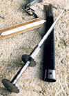
1Der Dolch und seine Scheide sind auf demselben Foto abgebildet.
Anfang XV. Jahrhundert
Stahl.
265 €unverbindlich
Anfang XV. Jahrhundert
Gehört zu DG11.
95 €unverbindlich
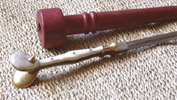
1Der Dolch und seine Scheide sind auf demselben Foto abgebildet.
Venedig · spätes XV. Jahrhundert
Knochengriff.
300 €unverbindlich
Spätes XV. Jahrhundert
Gehört zu DG13.
85 €unverbindlich
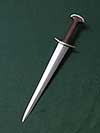
3Schweiz · XV. Jahrhundert
Replik.
249 €unverbindlich
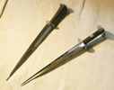
2Beide Dolche sind auf demselben Foto abgebildet.
Schweiz · XV. Jahrhundert
Standardmodell.
259 €unverbindlich
Frankreich, England · XV. Jahrhundert
Standardmodell.
259 €unverbindlich
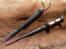
1XV. Jahrhundert
Horn- und Knochengriff.
295 €unverbindlich
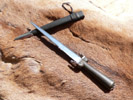
3Flämisch · 1450–1500
Replik.
295 €unverbindlich
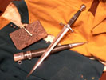
3Deutschland · 1500–1520
Horn- & Knochengriff. Das Original ist im Metropolitan Museum of Art, New York.
459 €unverbindlich
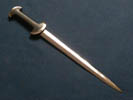
2Schweiz · XV. Jahrhundert
Replik.
259 €unverbindlich
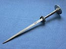
3Deutschland · spätes XV. Jahrhundert
Das Original ist im Besitz der Staatlichen Kunstsammlungen, Dresden, Deutschland.
319 €unverbindlich
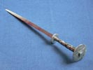
3Deutschland · spätes XV. Jahrhundert
Das Original ist im Besitz der Staatlichen Kunstsammlungen, Dresden, Deutschland.
319 €unverbindlich
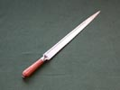
3Deutschland / Böhmen · spätes XV. Jahrhundert
Länge: ca. 47 cm. Original in der Sammlung Arma Bohemia.
255 €unverbindlich
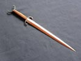
3Westdeutschland · XII.–XIII. Jahrhundert
Klinge aus Damast- oder Federstahl. Länge: ca. 46 cm. Das Original ist im Besitz des Bayerischen Armeemuseums, Ingolstadt, Deutschland.
225 €unverbindlich
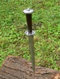
3Schweiz · 2. Hälfte des XV. Jahrhunderts
Länge: ca. 33 cm. Das Original ist im Besitz des Schweizerischen Landesmuseums, Zürich, Schweiz.
255 €unverbindlich
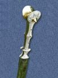
3Italien, Venedig · spätes XV.–Anfang XVI. Jahrhundert
Länge: 38,8 cm, Knochengriff, verziert.
455 €unverbindlich
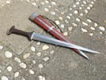
2XIII.–XIV. Jahrhundert
Länge: ca. 55 cm. Inklusive Holzscheide.
295 €unverbindlich
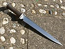
4Südost-England · 2. Hälfte des XV. Jahrhunderts
Länge: ca. 36 cm. Aus einer Privatsammlung.
279 €unverbindlich
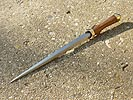
3Deutschland oder Niederlande · XV. Jahrhundert
Länge: ca. 45 cm. Das Original ist im Besitz des Deutschen Klingenmuseums, Solingen, Deutschland.
269 €unverbindlich
 2
2
Wohl Schweiz oder Italien · XIV. Jahrhundert
Gesamtlänge: ca. 45,5 cm. Original im Royal Armouries, Leeds.
298 €unverbindlich
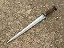
3Frankreich oder Deutschland · um 1450
Länge: ca. 37 cm. Inklusive Holz- oder Lederscheide. Das Original ist im Besitz des Reichstadtmuseums Rothenburg o.d.T., Deutschland.
289 €unverbindlich
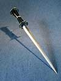
4Frankreich oder Deutschland · um 1450
Gesamtlänge: ca. 43 cm. Inklusive Holz- oder Lederscheide.
289 €unverbindlich
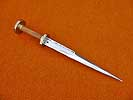
3Burgund · XV. Jahrhundert
Gesamtlänge: ca. 35 cm. Aus einer Privatsammlung.
299 €unverbindlich
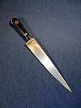
3Norditalien (Trentino) · um 1450
Gesamtlänge: ca. 40 cm. Das Original ist im Besitz des Reichstadtmuseums Rothenburg o.d.T., Deutschland.
269 €unverbindlich
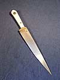
4Norditalien (Trentino) · um 1450
Gesamtlänge: ca. 40 cm. Das Original ist im Besitz des Reichstadtmuseums Rothenburg o.d.T., Deutschland.
269 €unverbindlich
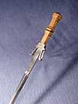
4Italien, Spanien · XV. Jahrhundert
Gesamtlänge: ca. 45,5 cm. Das Original ist im Besitz des Museo de Armería de Álava, Vitoria-Gasteiz, Spanien.
279 €unverbindlich
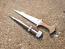
3Schweiz, Deutschland · XIV. Jahrhundert
Gesamtlänge: ca. 41 cm. Beschrieben bei Schneider, Wegeli.
289 €unverbindlich
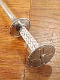
3XIV.–XV. Jahrhundert
Knochengriff, dekoriert.
339 €unverbindlich
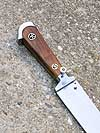
3Deutschland, Böhmen · spätes XV.–Anfang XVI. Jahrhundert
Gesamtlänge: ca. 62,5 cm. Original im Besitz der Sammlung Arma Bohemia.
269 €unverbindlich
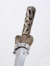
3England (?) · 1450–1500
Gesamtlänge: ca. 42 cm. Das Original ist im Besitz des Metropolitan Museum of Art, New York, USA.
395 €unverbindlich
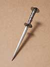
3Deutschland · Anfang XV. Jahrhundert
Gesamtlänge: ca. 31 cm. Aus einer Privatsammlung.
238 €unverbindlich
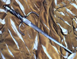
1Italien · XVI. Jahrhundert
Länge: 59,5 cm, Gewicht: ca. 0,57 kg.
229 €unverbindlich
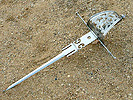
3Spanien · XVI. Jahrhundert
Länge: ca. 60 cm.
260 €unverbindlich
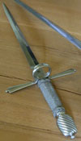
1XVI.–XVII. Jahrhundert
Länge: 35 cm, Gewicht: ca. 0,5 kg.
330 €unverbindlich
 3
3
Spanien · XVI.–XVII. Jahrhundert
Hochwertig dekoriert.
1200 €unverbindlich
{kind=link}
{kind=link}
{kind=link}
{kind=link}
{kind=link}
{kind=link}
{kind=link}
{kind=link}
{kind=link}
{kind=link}
{kind=link}
{kind=link}
{kind=link}
{kind=link}
{kind=link}
{kind=link}
{kind=link}
{kind=link}
{kind=link}
{kind=link}
{kind=link}
{kind=link}
{kind=link}
{kind=link}
{kind=link}
{kind=link}
{kind=link}
{kind=link}
{kind=link}
{kind=link}
{kind=link}
{kind=link}
{kind=link}
{kind=link}
{kind=link}
{kind=link}